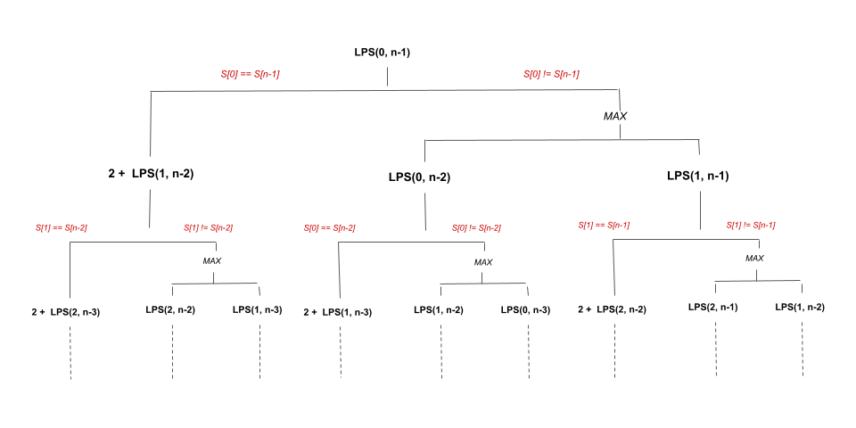

We are given a string s. Our task is to find the longest palindromic subsequence length in
s.
If you are new to Dynamic Programming, please see our Leetcode Explore Card for more information on it!
An intutive approach to solve this problem is to generate all the subsequences of the given string and find the longest palindromic string among all the generated strings. There are a total of 2n2^{n} strings possible, where nn denotes the length of the given string.
We can use recursion to generate all possible strings.
If the first and last characters are the same, both characters are guaranteed to be considered in the final
palindrome. As a result, we add 2 to our answer variable and recursively remove the first and last
characters from the remaining substring.
If the first and last characters aren’t the same, they cannot both occur in the final palindrome. As a result, we recurse over the substring removing the first and also recurse over the substring removing the last character. As we want the longest palindromic subsequence, we pick the maximum out of both of these.
To perform this recursion, we use two pointers, i and j, where i is the index
of the first character and j is the index of the last character, to form a substring of s
that is being considered. As a result, the recursive relation can be written as follows:
- If
s[i] == s[j], performanswer = 2 + LPS(i + 1, j - 1).- Else, perform
answer = max(LPS(i, j - 1), LPS(i + 1, j).
where LPS(int i, int j) is a recursive method that returns the longest palindromic subsequence of the
substring formed from index i to index j in s. The solution is LPS(0, n
- 1), where n is the length of s
The recursion tree of the above relation would look something like this:

Several subproblems, such as LPS(2, n - 2), LPS(1, n - 3), etc., are solved twice in the
partial recursion tree shown above. If we draw the entire recursion tree, we can see that there are many subproblems
that are solved repeatedly.
To avoid this issue, we store the solution of the subproblem in a 2D array when it is solved. When we encounter the same subproblem again, we simply refer to the array. This is called memoization.
n and initialize it to the size of s.memo having n rows and n columns where memo[i][j]
contains the length of the longest palindromic subsequence of the substring formed from index i to
j in s.
lps(s, 0, n - 1, memo) where lps is a recursive method with four parameters:
s, the starting index of the substring under consideration as i, the ending index of
the substring as j and memo. We perform the following in this method:
memo[i][j] != 0, it indicates that we have already solved this subproblem, so we return
memo[i][j].
i > j, the string is empty. We return 0.i == j, it is a substring having one character. As a result, we return 1.
s[i] == s[j], we include these two
characters in the palindromic subsequence and add it to the longest palindromic subsequence formed using
the substring from index i + 1 to j - 1 (inclusive). We perform memo[i][j]
= lps(s, i + 1, j - 1, memo) + 2.
memo[i][j] = max(lps(s, i + 1, j, memo), lps(s, i, j -
1, memo)).
memo[i][j].
Java
class Solution {
public int longestPalindromeSubseq(String s) {
int n = s.length();
int[][] memo = new int[n][n];
return lps(s, 0, n - 1, memo);
}
private int lps(String s, int i, int j, int[][] memo) {
if (memo[i][j] != 0) {
return memo[i][j];
}
if (i > j) {
return 0;
}
if (i == j) {
return 1;
}
if (s.charAt(i) == s.charAt(j)) {
memo[i][j] = lps(s, i + 1, j - 1, memo) + 2;
} else {
memo[i][j] = Math.max(lps(s, i + 1, j, memo), lps(s, i, j - 1, memo));
}
return memo[i][j];
}
}
C++
class Solution {
public:
int longestPalindromeSubseq(string s) {
int n = s.size();
vector> memo(n, vector(n));
return lps(s, 0, n - 1, memo);
}
int lps(string s, int i, int j, vector>& memo) {
if (memo[i][j] != 0) {
return memo[i][j];
}
if (i > j) {
return 0;
}
if (i == j) {
return 1;
}
if (s[i] == s[j]) {
memo[i][j] = lps(s, i + 1, j - 1, memo) + 2;
} else {
memo[i][j] = max(lps(s, i + 1, j, memo), lps(s, i, j - 1, memo));
}
return memo[i][j];
}
};
Python3
class Solution:
def longestPalindromeSubseq(self, s: str) -> int:
n = len(s)
memo = {}
def lps(l, r):
if (l,r) in memo:
return memo[(l,r)]
if l > r:
return 0
if l == r:
return 1
if s[l] == s[r]:
memo[(l,r)] = lps(l + 1, r - 1) + 2
else:
memo[(l,r)] = max(lps(l, r - 1), lps(l + 1, r))
return memo[(l, r)]
return lps(0, n - 1)
Here, nn
is the length of s.
Time complexity: O(n2)O(n^2)
memo array takes O(n2)O(n^2) time.
Space complexity: O(n2)O(n^2)
memo array consumes O(n2)O(n^2) space.
s[i]!= s[j]). The recursion stack would only have one call out of the two
branches. The height of such a tree will be O(n)O(n)
because at each level we are decrementing the length of the string under consideration by '1'. As a
result, the recursion tree that will be formed will have O(n)O(n)
height. Hence, the recursion stack will have a maximum of O(n)O(n)
elements.
We used memoization in the preceding approach to store the answers to subproblems in order to solve a larger problem. We can also use a bottom-up approach to solve such problems without using recursion. We build answers to subproblems iteratively first, then use them to build answers to larger problems.
Using the same method as before, we create a 2D-array dp, where dp[i][j] contains the
answer of the longest palindromic subsequence of the substring formed from index i to j in
s. Our answer would be dp[0][n - 1], where n is the size of s.
The state transition would be as follows:
- If
s[i] == s[j], performdp[i][j] = 2 + dp[i + 1][j - 1].- Otherwise, perform
dp[i][j] = max(dp[i][j - 1], dp[i + 1][j].
The dp array can be filled in a variety of ways. A few of them are briefly discussed below:
i and j, where
i points to the first character of the substring under consideration and j points to
the last character. Using dp entries corresponding to all the substrings formed by selecting
indices within the range from i to j (inclusive), we form answers for all the
substrings that start index i - 1. The pointer j moves from j = i - 1 to
j = n - 1 to cover all possible substrings that start at index i - 1. (we can also
choose to move from i to j + 1, i.e., from left to right). From the end of the string,
we move from right to left, decrementing i by 1 until we reach the index
0. This is the approach we take here.
n and initialize it to the size of s.dp having n rows and n columns where dp[i][j]
contains the length of the longest palindromic subsequence of the substring formed from index i to
j in s.
i = n - 1 to i = 0
decrementing i by 1 after each iteration. At the end of each iteration, we will have
the length of longest palindromic subsequence in all the substrings that start from index i in
s. For each i, we first mark dp[i][i] = 1 because it denotes just one
character and then we iterate over j = i + 1 to j = n - 1 and perform the following:
s[i] == s[j], we include these two
characters in the palindromic subsequence and add it to the longest palindromic subsequence formed using
the substring from index i + 1 to j - 1 (inclusive). We perform dp[i][j]
= dp[i + 1][j - 1] + 2. We already have the answer for dp[i + 1][j - 1] because
we computed it for substrings starting at index i + 1 in the previous iteration of outer
loop.
dp[i][j] = max(dp[i + 1][j], dp[i][j - 1]).
dp[0][n - 1].
Java
class Solution {
public int longestPalindromeSubseq(String s) {
int[][] dp = new int[s.length()][s.length()];
for (int i = s.length() - 1; i >= 0; i--) {
dp[i][i] = 1;
for (int j = i + 1; j < s.length(); j++) {
if (s.charAt(i) == s.charAt(j)) {
dp[i][j] = dp[i + 1][j - 1] + 2;
} else {
dp[i][j] = Math.max(dp[i + 1][j], dp[i][j - 1]);
}
}
}
return dp[0][s.length() - 1];
}
}
C++
class Solution {
public:
int longestPalindromeSubseq(string s) {
int n = s.size();
vector> dp(n, vector(n));
for (int i = n - 1; i >= 0; i--) {
dp[i][i] = 1;
for (int j = i + 1; j < n; j++) {
if (s[i] == s[j]) {
dp[i][j] = dp[i + 1][j - 1] + 2;
} else {
dp[i][j] = max(dp[i + 1][j], dp[i][j - 1]);
}
}
}
return dp[0][n - 1];
}
};
Python3
class Solution:
def longestPalindromeSubseq(self, s: str) -> int:
n = len(s)
dp = [[0] * n for _ in range(n)]
for i in range(n - 1, -1, -1):
dp[i][i] = 1
for j in range(i + 1, n):
if s[i] == s[j]:
dp[i][j] = dp[i + 1][j - 1] + 2
else:
dp[i][j] = max(dp[i + 1][j], dp[i][j - 1])
return dp[0][n - 1]
Here, nn
is the length of s.
Time complexity: O(n2)O(n^2)
dp array takes O(n2)O(n^2) time.
dp array which takes O(n2)O(n^2) time.
Space complexity: O(n2)O(n^2)
dp array consumes O(n2)O(n^2) space.
The state transition, as we discussed in previous approaches, is:
- If
s[i] == s[j], performdp[i][j] = 2 + dp[i + 1][j - 1].- Otherwise, perform
dp[i][j] = max(dp[i][j - 1], dp[i + 1][j].
If we look closely at this transition, to fill dp[i][j] for a particular i and all possible
values of j, we only need the values from the current and previous rows. To fill row i + 1
in the dp grid, we need the values from row i + 1 (dp[i + 1][j - 1]) and
previously computed value in the ithi^{th}
row itself (dp[i][j - 1]). Values in rows i + 2, i + 3, and so on are no
longer needed.
Our task is complete if we can store the values of the previous iteration, i.e., for row i + 1 after
each iteration of the outer loop.
We can solve this by using two 1D arrays of size n, dp and dpPrev, where
n is the size of s. We repeat the previous approach by running two loops. The outer loop
runs from i = n - 1 to i = 0, and the inner loop runs from j = i + 1 to
j = n - 1.
Now, dp[j] stores the length of longest palindromic subsequence of the substring from index
i to j in s. It is similar to what dp[i][j] stored in previous
approach.
The other array dpPrev is important to understand. It helps us by remembering the previous state that we
completed previously. dpPrev[j] stores the length of the longest palindromic subsequence of the
substring from index i + 1 to j in s. It is analogous to dp[i +
1][j] in the previous approach.
Because dpPrev stores the answers of substrings beginning with index i + 1 and
dp stores the answers of substrings beginning with index i we must copy the elements of
dp to dpPrev after iterating over all the substrings beginning with index i
to prepare for the next iteration. After we copy dp to dpPrev, for the next iteration
which considers substrings from i - 1, dpPrev will hold values of substrings beginning at
index i which is exactly what we want.
n and initialize it to the size of s.dp and dpPrev of size n.i = n - 1 to i = 0
decrementing i by 1 after each iteration. For each i, we first mark
dp[i] = 1 since it denotes just one character at index i and then we iterate over
j = i + 1 to j = n - 1 and perform the following:
s[i] == s[j], we include these two
characters in the palindromic subsequence and add it to the longest palindromic subsequence formed using
the substring from index i + 1 to j - 1 (inclusive). We perform dp[j] =
dpPrev[j - 1] + 2. Note that we already have computed answer for substrings starting from
index i + 1 in the previous iteration of outer loop. We have it in dpPrev.
dp[j] = max(dpPrev[j], dp[j - 1]).
dp to dpPrev.dp[n - 1] (or dpPrev[n - 1] as both are similar).
Java
class Solution {
public int longestPalindromeSubseq(String s) {
int n = s.length();
int[] dp = new int[n];
int[] dpPrev = new int[n];
for (int i = n - 1; i >= 0; --i) {
dp[i] = 1;
for (int j = i + 1; j < n; ++j) {
if (s.charAt(i) == s.charAt(j)) {
dp[j] = dpPrev[j - 1] + 2;
} else {
dp[j] = Math.max(dpPrev[j], dp[j - 1]);
}
}
dpPrev = dp.clone();
}
return dp[n - 1];
}
}
C++
class Solution {
public:
int longestPalindromeSubseq(string s) {
int n = s.size();
vector dp(n), dpPrev(n);
for (int i = n - 1; i >= 0; --i) {
dp[i] = 1;
for (int j = i + 1; j < n; ++j) {
if (s[i] == s[j]) {
dp[j] = dpPrev[j - 1] + 2;
} else {
dp[j] = max(dpPrev[j], dp[j - 1]);
}
}
dpPrev = dp;
}
return dp[n - 1];
}
};
Python3
class Solution:
def longestPalindromeSubseq(self, s: str) -> int:
n = len(s)
dp, dpPrev = [0] * n, [0] * n
for i in range(n - 1, -1, -1):
dp[i] = 1
for j in range(i + 1, n):
if s[i] == s[j]:
dp[j] = dpPrev[j - 1] + 2
else:
dp[j] = max(dpPrev[j], dp[j - 1])
dpPrev = dp[:]
return dp[n - 1]
Here, nn
is the length of s.
Time complexity: O(n2)O(n^2)
dp and dpPrev arrays take O(n)O(n) time.
Space complexity: O(n)O(n)
dp and dpPrev arrays take O(n)O(n) space
each.